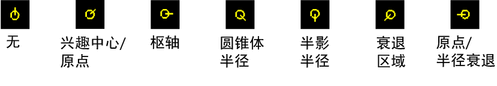

通过使用灯光操纵器，可以按交互方式调整视图中某些光源的属性。灯光操纵器会显示在场景视图中（或者，在某些情况下，如果沿光源观看，会显示在光源的视图中）。可以执行的操作：
显示灯光操纵器
- 选择灯光的图标。
- 选择“修改 > 变换工具 > 显示操纵器工具”(Modify > Transformation Tools > Show Manipulator Tool)以查看灯光的操纵器（或者按热键 t）。
- 单击“索引操纵器”(Index Manipulator)以显示每种不同类型的灯光操纵器。“索引操纵器”(Index Manipulator)上划线的位置指示会显示哪些操纵器。

显示特定的灯光操纵器
- 选择灯光。
- 单击“显示 > 显示 > 灯光操纵器”(Display > Show > Light Manipulator)，然后选择一个操纵器。
隐藏灯光操纵器
- 选择“显示 > 隐藏 > 灯光操纵器”(Display > Hide > Light Manipulators)。
更改灯光操纵器的大小
- 按 -（减小）或 =（增大）。